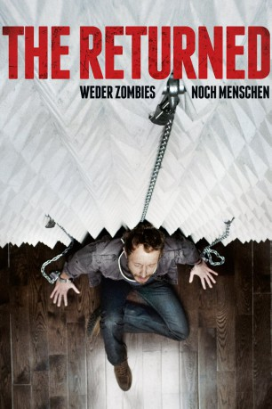

#5873 The Returned - Weder Zombies noch Menschen
 
 IMDB-Wertung: 5.9 / 10
IMDB-Wertung: 5.9 / 10  Metascore: 0
Metascore: 0 
Es grassiert ein Virus auf der Welt, das die Menschen in Zombies verwandelt - es sei denn, sie nehmen rechtzeitig und vom Moment ihrer Infektion an täglich ein Gegenmittel ein, welches verhindert, dass sie sich in grausame Monster verwandeln. Diese Infizierten, die ein normales Leben zu führen versuchen, werden "The Returned" genannt. Das Leben dieser Leute verläuft fast so normal weiter wie vor der Zeit des Virus' - bis die Gegenmittelvorräte eines Tages zur Neige gehen. Randale bricht aus, Menschen verzweifeln und schließen sich in Organisationen zusammen, die die präventive Ermordung aller Infizierten - also aller "Returned" - fordern. So kann auch Musiker Alex seine Krankheit nicht länger vor Freundin Kate verbergen. Um zu verhindern, dass sich Alex in einen mörderischen Zombie verwandelt, beginnt nun ein Wettlauf um die raren Phiolen mit dem rettenden Serum...
Jahr: 2013
Dauer: 93 Minuten
FSK: 12
Land: Spanien Studio: MFA FilmdistributionTonspuren: DTS - ,
Untertitel: Deutsch,
Auflösung: 1080p (1920x800) Größe: 4239 MB
Genre: Thriller, Horror, Drama, Sci-Fi
Regisseur: Manuel Carballo
Drehbuch: Elfie Donnelly
Soundtrack:
Darsteller:
- Emily Hampshire als Kate
- Kris Holden-Ried als Alex Green
 Shawn Doyle als Jacob
Shawn Doyle als Jacob- Claudia Bassols als Amber
 Melina Matthews als Eve
Melina Matthews als Eve Barry Flatman als Dave
Barry Flatman als Dave- Oluniké Adeliyi als Return Unit Nurse
- David Tompa als Father
- Megan Fahlenbock als Mother
- Bruno Verdoni als Investigating Officer
 Paul Anthony als Government Spokesperson
Paul Anthony als Government Spokesperson- Romy Weltman als Young Kate
 Bill Lake als The General
Bill Lake als The General- Stephen Chambers als Anti-Returned Activist
- Brian Christopher als Gas Station Attendant
- Emily Alatalo als TV Reporter
- Mark Roeder als Music Student
- Lewis Hodgson als Military Doctor
- Joseph Wynne als Hooded Man #2
- Jonathan Lewis als Country House Zombie
 Paulino Nunes als Detective Cawl
Paulino Nunes als Detective Cawl- Andy Hull als Mover
 Mark Schardan als , uncredited
Mark Schardan als , uncredited- Darren Summersby als Protester , uncredited
- Steven Gallagher als Security Guard
- Josh Pattynama als Infected Boy
- Rhea Akler als Kate's Mother
- Leo Petrus als Man in Conference Room
- Mark Carins als Shopkeeper
- Mario Romano als Gas Station Owner
- Claudia Ferreira als Roadside Medical Centre Girl
- Patricia Tedford als Newscaster
- Roger Shank als TV Presenter
- Wayne Downer als Hooded Man #1
- Andy Boorman als Detective Anderson
- Phil Guerrero als Lee Fung
- Scott McCrickard als Hardware Store Helper
- Mark Fraser als Moving Company Boss
- Garrett M. Ryan als Slingshot Boy
- Ryan Bazinet als Protestor Background , uncredited
- Greg Brown als Soldier / Assasin / Riot Police , uncredited
- Michael Cleland als Infected Patient / Passerby , uncredited
- Kyle Kivi als Military Field Doctor , uncredited
- Jamie Lyle als Doctor , uncredited
- Evie Moores als Nurse , uncredited
- Rayvin Nyte als Nurse , uncredited
- Dave Raymond als Returned Activist , uncredited
- Jack Sansone als Zombie Soldier , uncredited
- Ryan Watkinson als Infected Patient , uncredited
Datei: X:\2013(N-Z)\Returned - Weder Zombies noch Menschen, The (2013, FSK12, 1920x800).mkv seit 31.03.2017
Festplatte: HD 2013(I-Z)-2014(A-Z)
 Es gibt insgesamt 133 Filme in der Gruppe '2013(N-Z)'
Es gibt insgesamt 133 Filme in der Gruppe '2013(N-Z)'